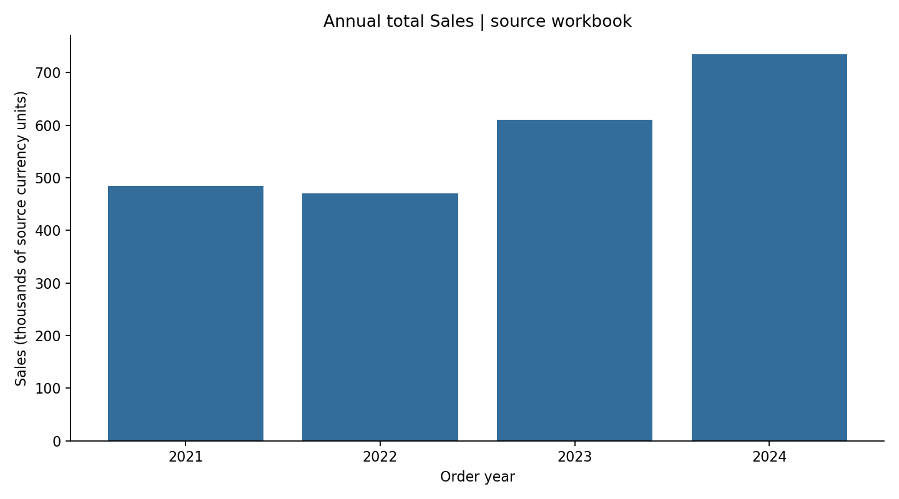
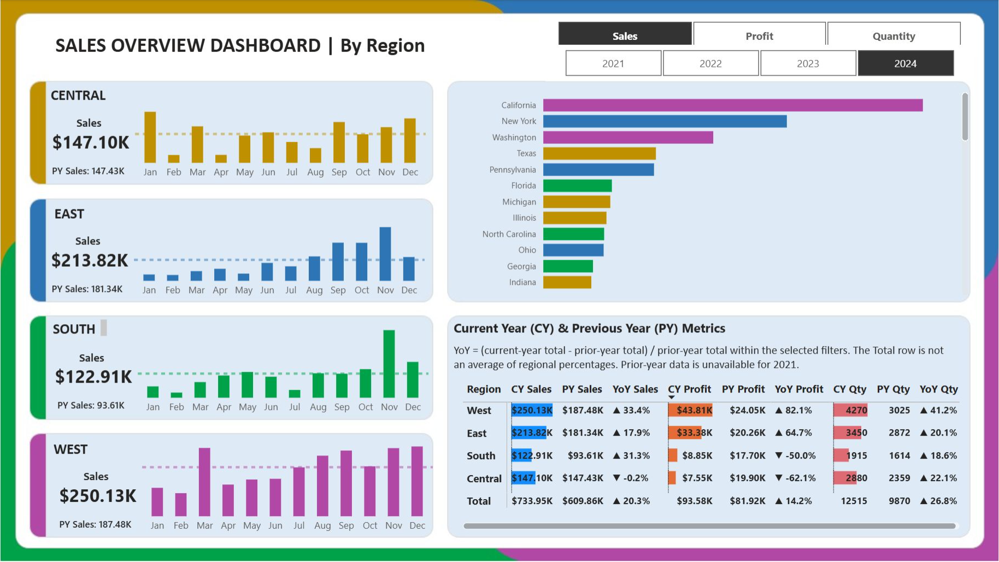

Power BI Sales Dashboard
A Power BI sales reporting project, with independent checks of annual totals and metric definitions.


The Power BI project
The repository includes my original salesoverview.pbix report. You can open it in Power BI Desktop to explore the report; the source-analysis preview above was generated separately in Python.
The finding
2024 total Sales are 733,948.35 source currency units, up 20.3% from 2023. Total sales and average line values answer different questions and need different labels.
How I approached it
Analysed the exact workbook already in the repository: 10,018 order lines and 5,026 distinct order IDs. Checked row IDs, quantities and reconciliation of annual and regional totals. Preserved the original Power BI file.
What I would do next
Inspect product, region, quantity and discount mix before attributing growth to a business strategy.
Scope and limitations
The upstream publisher, currency and licence have not been verified. Selected metric and year states were checked in Power BI Desktop; exhaustive measure validation and source refresh are not claimed. The displayed chart is generated by Python, not a live Power BI report.
Code, sources and checks
Sources, reproduction commands, definitions and validation checks are documented alongside the analysis.
What I would do next
Next step Investigate product and regional contributions before setting sales priorities.
How I’d measure success Track total sales, order counts and average order value consistently; assess profit only once reliable cost data is available.
I have not tested these changes in a business.